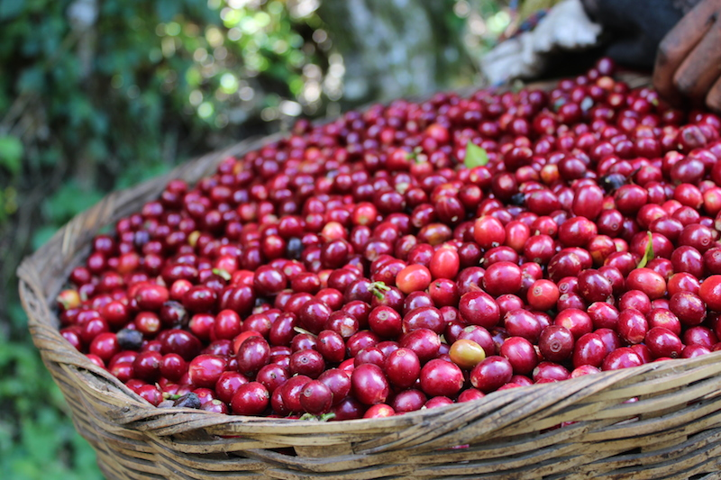
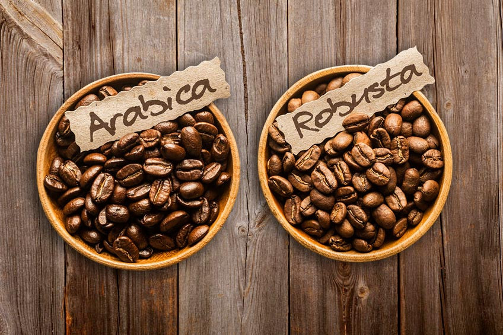

Kopi pertama kali masuk ke Indonesia di abad ke-17 oleh Belanda saat masa kolonial. Masa itu Belanda membawa bibit kopi Arabika dari Malabar, India, ke pulau Jawa. Upaya ini hampir gagal akibat letusan Gunung Merapi yang merusak tanaman, namun pengiriman bibit kopi selanjutnya berhasil. Tak lama, Belanda mulai memperluas perkebunan kopi di wilayah Indonesia seperti Sumatra, Sulawesi, Bali, dan Timor.
Kopi dari Indonesia segera menjadi komoditas berharga, terutama di pasar Eropa. Selama era "tanam paksa" di abad ke-19, petani lokal diwajibkan menanam kopi dan komoditas lain untuk kepentingan Belanda, yang membawa keuntungan pada pemerintah kolonial. Seiring berjalannya waktu, Indonesia menjadi salah satu eksportir kopi terbesar di dunia, dan kopi Jawa pun menjadi terkenal hingga sekarang.
Pasca-kemerdekaan, perkebunan kopi kembali dikelola secara mandiri oleh masyarakat Indonesia. Kini, Indonesia dikenal dengan beragam kopi spesial, seperti kopi Luwak dan kopi Gayo, yang menambah kekayaan industri kopi global. Kopi tetap menjadi komoditas penting bagi Indonesia dan budaya kopi pun semakin berkembang hingga saat ini.
| Nama | Jumlah Gerai | Kisaran Harga | Source |
| Janji Jiwa | 900 outlet | > 15.000 | link |
| Starbucks | 500 outlet | > 50.000 | link |
| Kopi Kulo | 345 outlet | > 15.000 | link |
| Kopi Kenangan | 932 outlet | > 15.000 | link |
| J.CO Donuts & Coffee | 254 outlet | > 20.000 | link |
